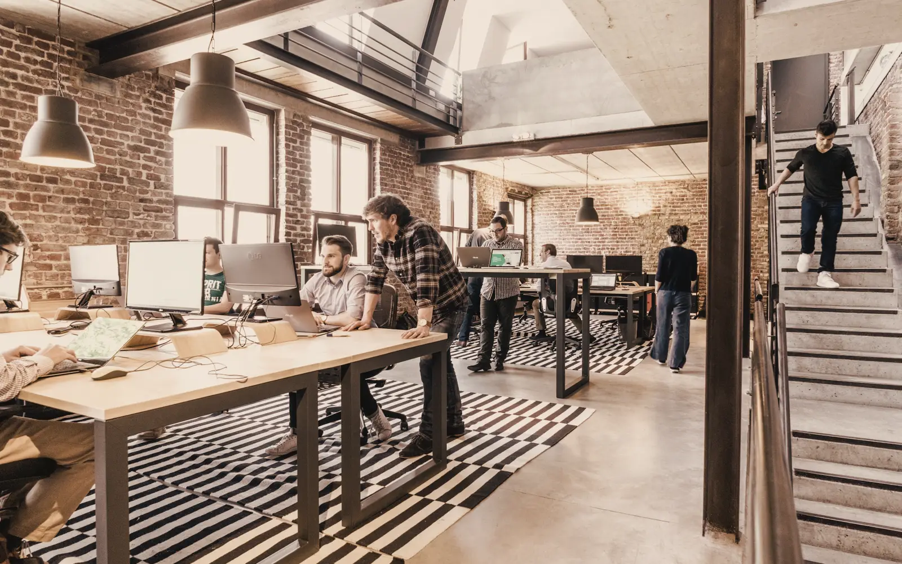
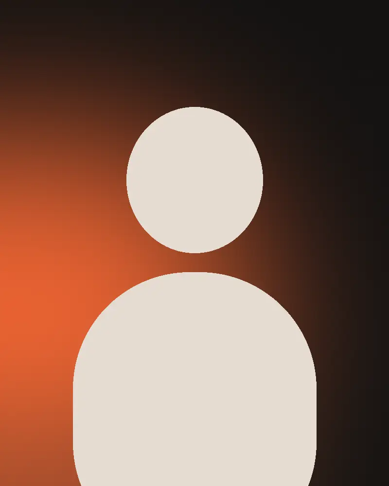
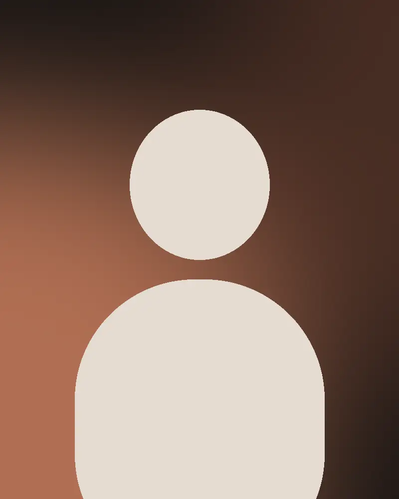
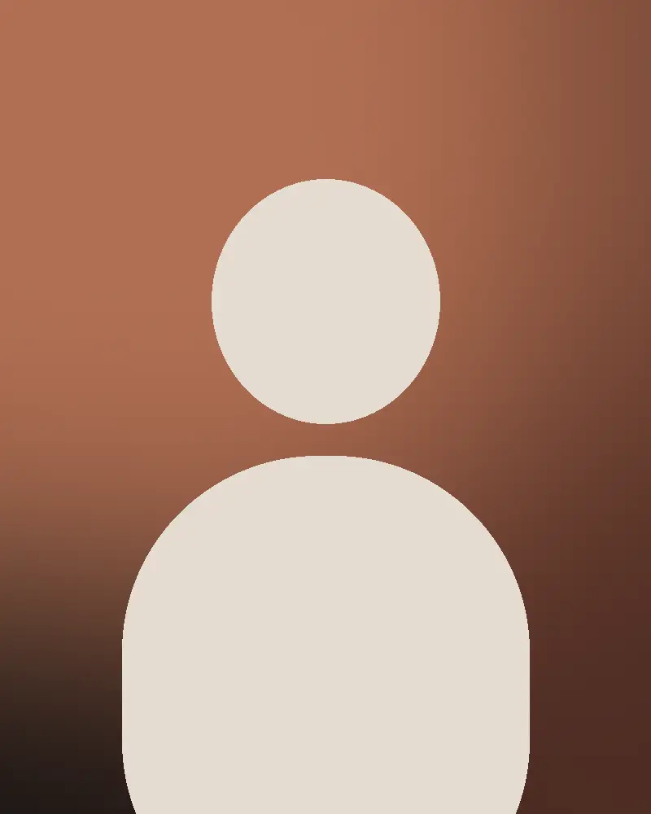
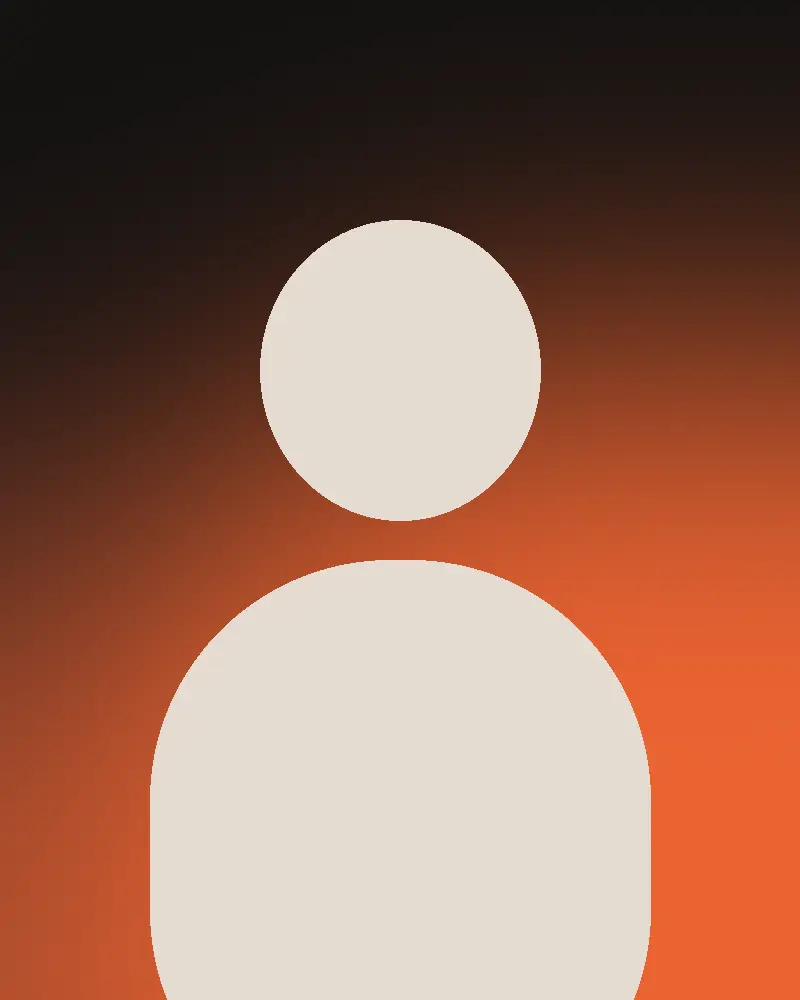
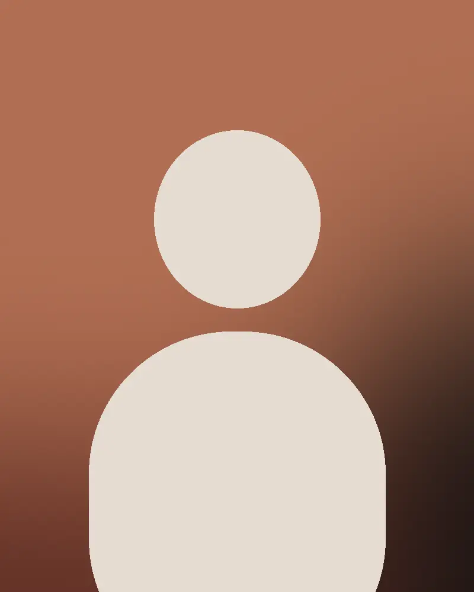
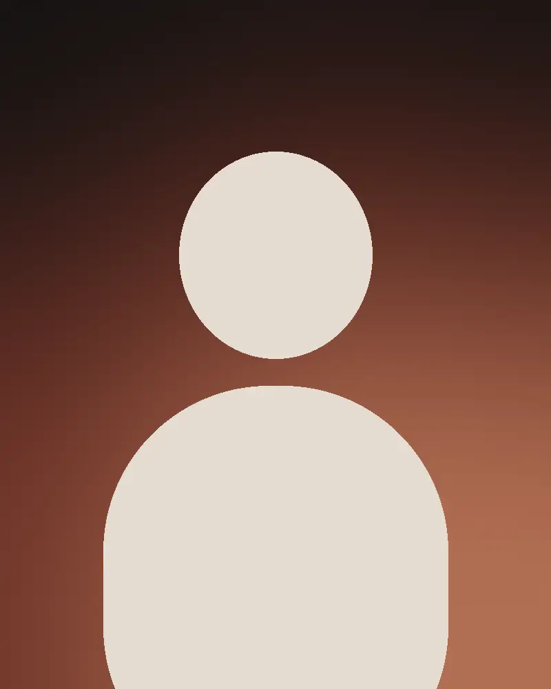
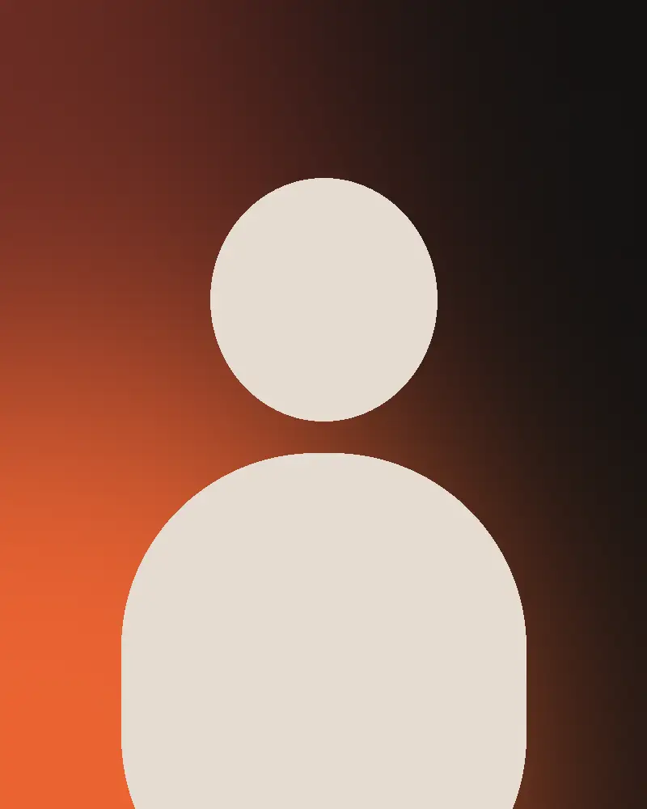
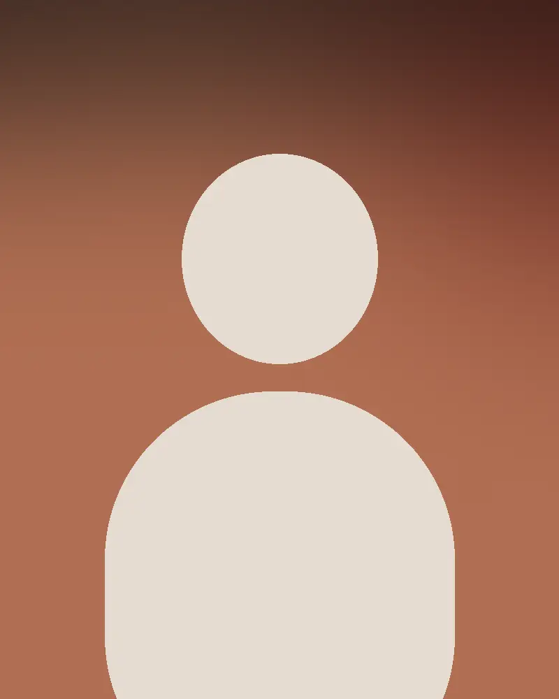

Discover
1 week- Interviews
- Audit
- Analytics
- Goals
About us
Brooklynbyte started in a Williamsburg loft in 2016 with three people and one bank. Today we're 24 designers, engineers and strategists, still in Brooklyn, still shipping every week.

How we work
Every project is led by the people you meet in the pitch. No hand-offs to juniors.
You see real progress every week, not a big reveal after three months.
We agree on numbers before we start, and report on them after launch.
Clean code, documented systems and training, so you never depend on us.
Team








Process
In numbers
Trusted by
| Bagian | Efek | Pemicu |
|---|---|---|
| Loader | counter [00]→[100], teks naik, panel naik 1.2s, hero terbuka | kunjungan pertama |
| Page transition | panel oranye naik + nama halaman (scramble) → halaman baru, panel keluar ke atas | klik tautan |
| Hero | bingkai clip terbuka, video 1.25→1, baris judul dari mask; lalu bingkai mengecil saat scroll | load / scrub |
| About (C1 dibalik) | pin 1600px: angka 0→140, kotak 4→1 menyusut, foto membesar ke layar penuh | scrub |
| Showcase (C2) | 10 langkah snap: foto clip dari bawah/atas, judul per kata, titik aktif, progress; keluar menyusut + blur | scroll / klik daftar |
| Services | akordeon tinggi 0→auto; pratinjau gambar ikut kursor | klik / hover |
| Stats | angka naik 1.6s | top 85% |
| Process | kartu bertingkat naik, chip pop | top 80% |
| Testimonials · Clients | mood night→paper; kartu stagger; marquee mengikuti arah & kecepatan scroll | scroll |
| Journal · CTA | gambar clip; blok oranye wipe-up (scrub); marquee | scroll |
| Footer | tirai (≥1024px), kolom stagger, huruf wordmark naik | scroll |
| Label | teks diacak lalu tersusun | top 88% |
| Tombol pill | isi oranye tumbuh dari titik kursor, teks roll, active scale .97 |
| Magnetik | CTA & WhatsApp tertarik ke kursor |
| Kursor | membesar "View" di kartu/baris proyek |
| Menu | item lain redup, panah masuk |
| Filter | Flip saat menyaring proyek/artikel |
| Kartu | gambar scale 1.05 |
| Tim | abu → berwarna |
Placeholder: 6 gambar proyek, sampul blog, foto tim = grafis sementara; final dari foto stok ber-grade hangat. Gerak: mati = simulasi reduced-motion (reload).